Wireless sensor for sound level monitoring
Jon Nordby jonnord@nmbu.no
December, 2018
Acoustic Noise
Sound level
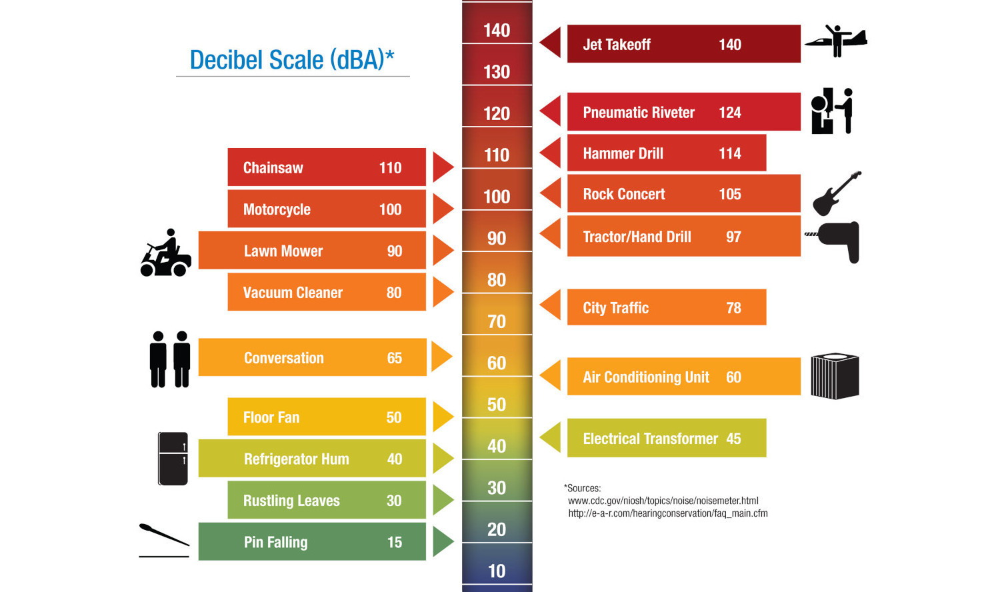
Normally A-weighted to simulate human hearing sensitivity.
Equivalent Sound Level
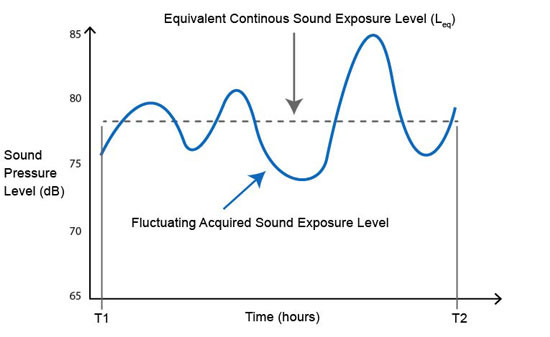
Sound level, averaged over a time period T.
Occupational noise
Noise experienced by workers
EU Directive 2003/10/EC - noise
Covers everything from office work to industrial labor.
Norwegian regulations
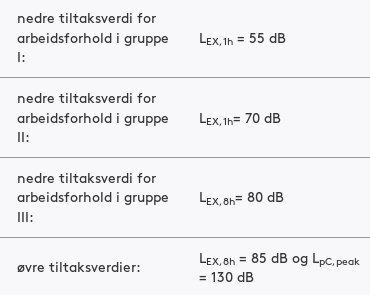
Forskrift om tiltaks- og grenseverdier $2-1, Arbeidsmiljøloven $4-4
Environmental noise
Noise pollution in general environment
EU Directive 2002/49/EC
Covers residential areas. Also relevant for hospitals, schools, kindergardens.
Norwegian regulations
Buildings (Byggteknisk forskrift, NS 8175.2008)
- Leq_24h
< 30db(new) - Leq_24h
< 35dB/42db(old)
Environment (Forurensningsloven)
- Lden
< 55 dB - Lnight
< 50 dB
WHO recommends Lnight < 40 dB(A)
Health impact
- Hearing impairment
- Reduced concentration
- Increased stress
- Sleep disturbance
- Increased blood pressure
- Heart problems
Environmental noise in Europe
- Increasing problem
- Road traffic the biggest source
- 125 million affected by road noise above Lden=55dB
- 37 million road noise above Lden=65dB
- 56 million affected at night (Lnight>50dbA)
EEA: Population exposure to environmental noise
Current state in Oslo/Norway
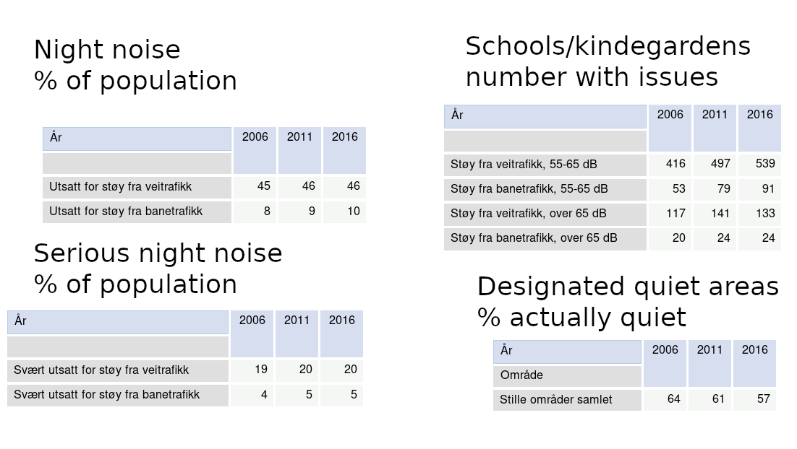
Statistikkbanken Oslo Kommune
:: notes
Minimum efforts wrt legislation. ! 2015 plan created "
http://statistikkbanken.oslo.kommune.no/webview/index.jsp?headers=r&Omrdesubset=1+-+15&stubs=Omrde&measure=common&virtualslice=Andel_value&layers=virtual&study=http%3A%2F%2F192.168.101.44%3A80%2Fobj%2FfStudy%2FTL-stille-omrader-prosent-areal&mode=cube&v=2&virtualsubset=Andel_value&Omrdeslice=1&rsubset=2006+-+2016&measuretype=4&rslice=2016&cube=http%3A%2F%2F192.168.101.44%3A80%2Fobj%2FfCube%2FTL-stille-omrader-prosent-areal_C1&top=yes
::
Noise measurements
Personal dosimeter
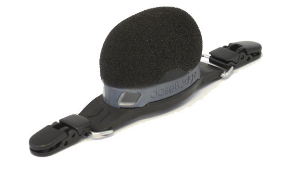
Standard: IEC 61252 Ed1.1 (2002-03), Personal Sound Exposure Meters
Sound Level Meters
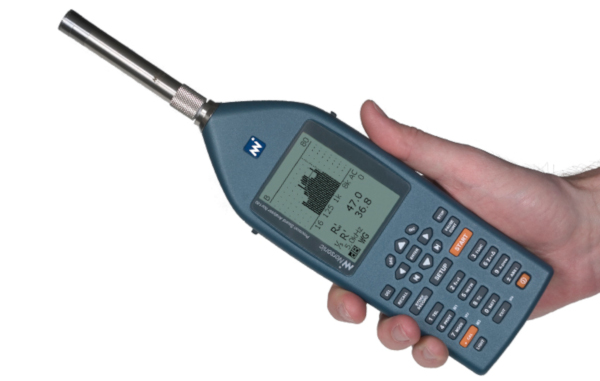
Standard: IEC 61672-1 2003, Sound Level Meters
Continious monitoring
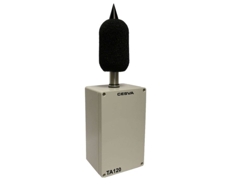
Lowest price found: 2000 EUR
Project
Problem statement
Design a wireless sensor node for environmental noise monitoring.
- Running only on battery power
- Does not require user-provided network
- Ability to identify noise source
Requirements
Costs
- Unit production costs. <1000 NOK
- Installation. <1000 NOK
- Running costs. <1000 NOK/year
Sound Level Measurements
- Continious sound level monitoring. LAeqT
- Tolerance should be within IEC 61672, Class 2
- Measurement resolution: per minute or better
- Latency: Reported daily or more often
Physical
- 1 year+ battery lifetime, rechargable
- Weatherproofing grade. IP55+ (IEC 60529)
- Easily mountable on flat surface, such as a wall.
- Aestethically acceptable for office/restaurant/home
Design
Hardware architecture

Power budget: <1mA
Bill of Materials
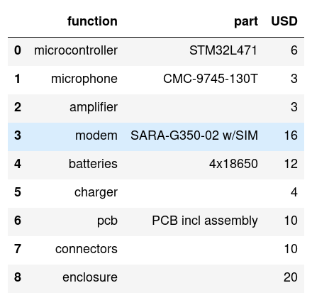
Total: 84 USD, 756 NOK
Energy source
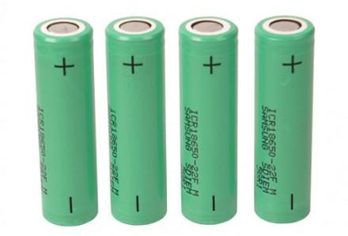
1mA@365 days = 8760 mAh. 4x18650 = 12800 mAh
Connectivity
Using 2G/GPRS with COM4.no (alt: 4G/NB-IoT)
| Type | Data/day | Cost/month |
|---|---|---|
| Leq minute | 1.5 kB | 13 NOK |
| Leq sec/8 | 691.2 kB | 51 NOK |
But, second/8 takes too much power!
Software architecture
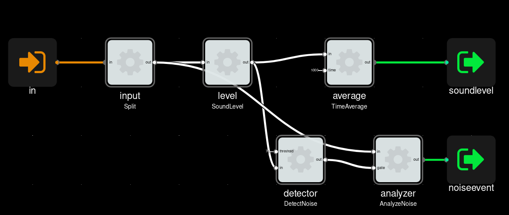
SoundLevel measured continuously, NoiseIdentification on-demand.
Noise Identification
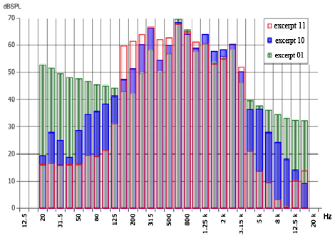
Paper: “An Efficient Audio Coding Scheme for Quantitative and Qualitative Large Scale Acoustic Monitoring Using the Sensor Grid Approach”
Microphone response
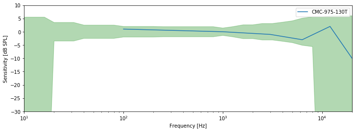
IP55 rated elecret mic. Looks to be within Class 2.
Prototype
Proto1
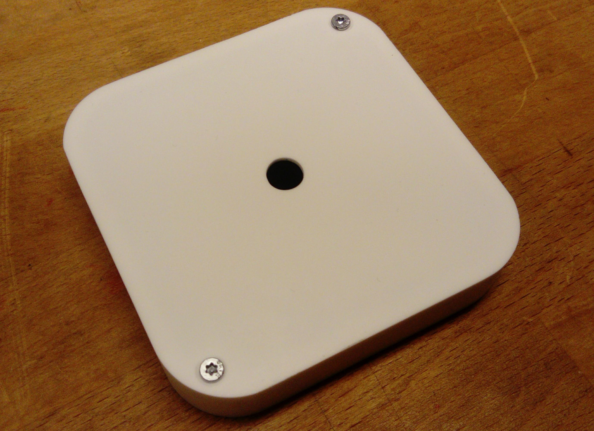
Inside
- Based on Nordic Thingy52 devkit
- BLE4.2 + GPRS modem
- Digital MEMS microphone. Not Class2!
- 1400mAh battery.
- CNC milled enclosure. IP22
Installed
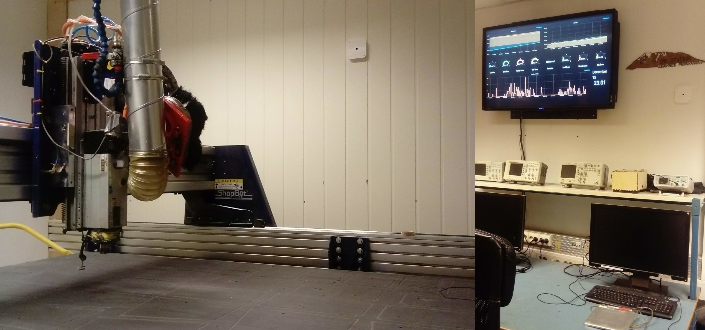
Conclusions
Feasibility
Possible to implement a sensor node with production, installation and running cost under 1000 NOK.
By running only on battery and using cellular connectivity.
Learned
- Need very big batteries for always-on measurements
- Unable to provide Short Leq (8 per second) measurements
- Microphone consumes majority of energy! Can one do periodic sampling? As a mode?
Bonus
Technical TODOs
Goal: Customer demo ready
- Firmware:
Leqcalculation - Firmware: Transmit using 2G modem
- Android app for bridging BLE data to web
- Minimal webinterface for sensor data
Market TODOs
Market research for different segments
- Restaurants/hotels/AirBnB
- Schools/kindergardens/hospitals
- Road/rail/construction/industry
- Consumers experiencing noise (road/rail etc)
Energy harvesting
Possible through external power connector.
- Solar/wind power
- Streetlights
Other usecases
For acoustic sensors
- Traffic estimation
- Structural montoring
- Predictive maintenance